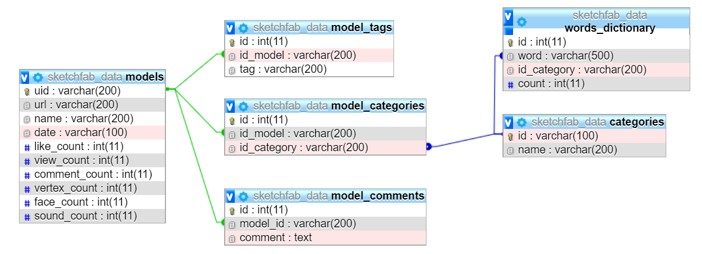

About This Project
This project was developed by Ferrulli Vito, a master degree student in computer science at the University of Pisa. It has been created for the course Scientific and Large Data Visualization and was supervised by professors Paolo Cignoni and Daniela Giorgi.
SketchAnalysis is an interactive website that analyzes the attributes of the 3D models available on sketchfab.com and shows related graphs.The main attributes of the models taken into consideration for this project are:
- Number of Views
- Number of Like
- Number of Comments
- Number of Vertices of the model
- Number of Faces of the model
The dataset used for the study was obtained through the use of jSketchfabCrawler, a java
application developed by Ferrulli Vito used to crawl the model's information from sketchfab.com using its public API.
The crawling process was carried out for 4 days, from 13/03/2020 to 16/03/2020, by downloading the data relating to
the models in descending order of views, from 16 million views to 175. In this period we collected information relating to 220K models.
The data relating to the models were stored on an SQL database with the following ER scheme: 
The source code of jSketchfabCrawler is available on Github
The source code of SketchAnalysis is available on Github
The dataset is available on Google Drive
Thanks to sketchfab.com for the kind concession of the data